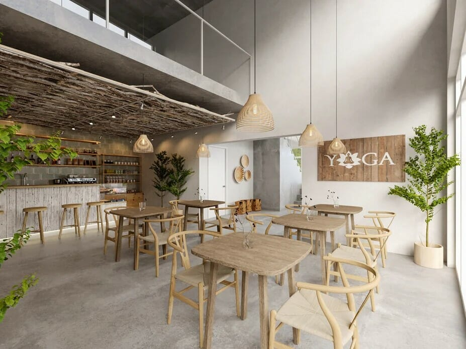

About Us
Our Story
Since 2010, Kyo Cafe has been a haven for coffee lovers and food enthusiasts alike. Our journey started with a simple mission: to create a warm and inviting space where people can relax, connect, and enjoy high-quality coffee and delicious treats.
Our Ingredients
We use locally sourced, organic coffee beans, fresh dairy products, and high-quality flour to craft our pastries. Every item is made with care for a delightful experience.
Our Staff
Our passionate team of baristas, chefs, and service staff is dedicated to providing exceptional service, ensuring every cup and dish is prepared with love.
Our Place & Atmosphere
Located in the heart of Colombo, Kyo Cafe offers a cozy and modern space where you can work, catch up with friends, or unwind in a welcoming environment.
Our Techniques
We blend traditional brewing techniques with modern innovations, from hand-poured specialty brews to expertly crafted espresso-based drinks.
What Our Customers Say
John Doe
"Kyo Cafe is my favorite place to relax and enjoy amazing coffee! great service, and a relaxing atmosphere. I come here almost every day!"
Michael Lee
"Great coffee, great service, and a relaxing atmosphere. Highly recommended!"
Emily Smith
"I came with my friends to here. This is a one of the great places to hangout with friends. we stayed for 3 hours and the staff was really helpful. Such a worthy place to visit!!"
Diana Fritz
"Tasty Food, Friendly staff and the food is worthy to the price. "
Jean Kristein
"A great place to visit. Food was so good. Highly recommended "
Gallery